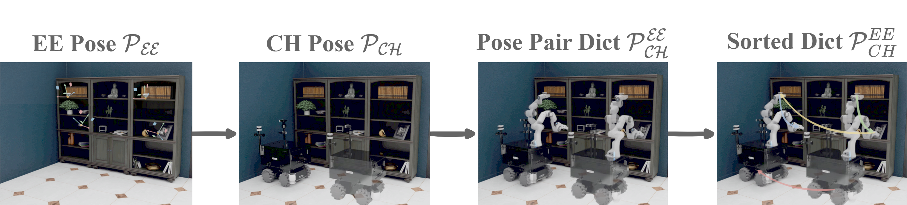

Approach
GODHS Framework

(todo)
Model Chain Design

(todo)
Pose Dictionary Estimation
(todo)
Enabling robots to efficiently search for and identify objects in complex, unstructured environments is critical for diverse applications ranging from household assistance to industrial automation. However, traditional scene representations typically capture only static semantics and lack interpretable contextual reasoning, limiting their ability to guide object search in completely unfamiliar settings—where every object’s relational information is vital. To address this challenge, we propose a language-enhanced hierarchical navigation framework that tightly integrates semantic perception and spatial reasoning. Our method, Goal-Oriented Dynamically Heuristic-Guided Hierarchical Search (GODHS), leverages large language models (LLMs) to dynamically infer scene semantics through common sense knowledge. To ensure reliability, we employ a structured prompt design within a language model chain, imposing logical constraints on LLM inputs and outputs. For mobile manipulators, we further introduce a hybrid motion planner that combines polar angle sorting with distance prioritization, minimizing travel while maintaining directional consistency when selecting among multiple candidate poses. Comprehensive evaluations in Isaac Sim demonstrate that our approach significantly increases object search success rates in novel environments and outperforms conventional semantic navigation strategies in terms of path efficiency.
(todo)
(todo)
(todo)
@inproceedings{zhang25godhs,
title={Language-Exclusive Mobile Manipulation for Efficient Object Search in Indoor Environments},
author={Liding Zhang and Kuanqi Cai and Zeqi Li and Zhenshan Bing and Sami Haddadin and Alois Knoll}
}